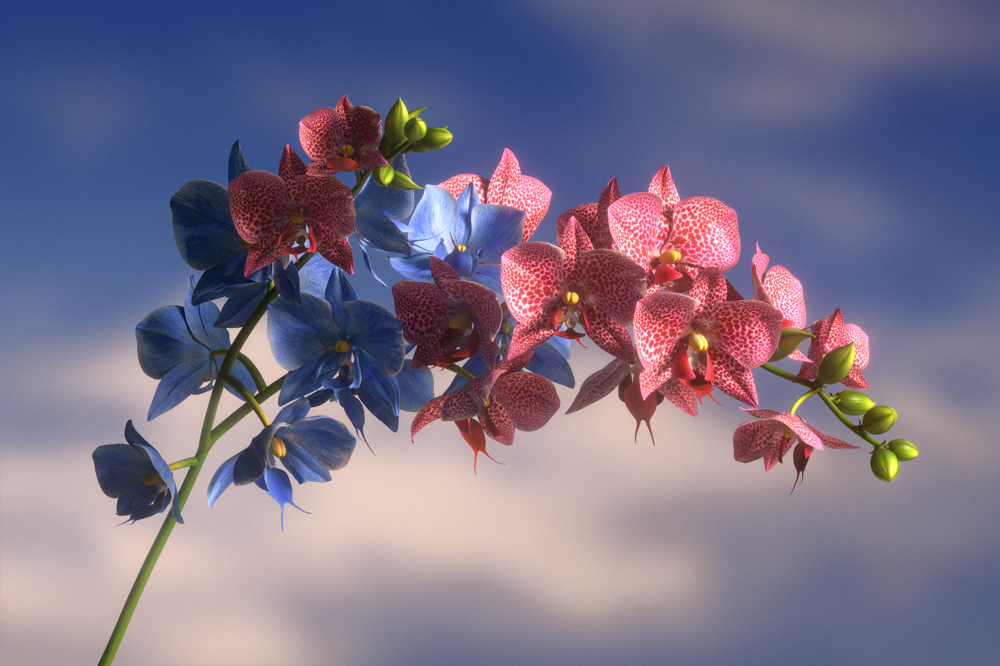

WePresent, Doubt
Visuals developed for WePresent to illustrate an article by Juno Dawson, in which she writes about the benefits of being doubtful—what we can learn and achieve from second guessing and dipping our toes into new ventures.
In order to paint uncertainty as a natural process, the illustrations explore moments where nature itself is manifesting doubt, blurring the line between real and surreal to depict how instinctive and innate being doubtful is, and how it can lead to unexpected, beautiful things.
- Client: WePresent
- Year: 2020
- Art Direction and 3D: Pedro Veneziano
- Commissioning Editor: Suzanne Tromp